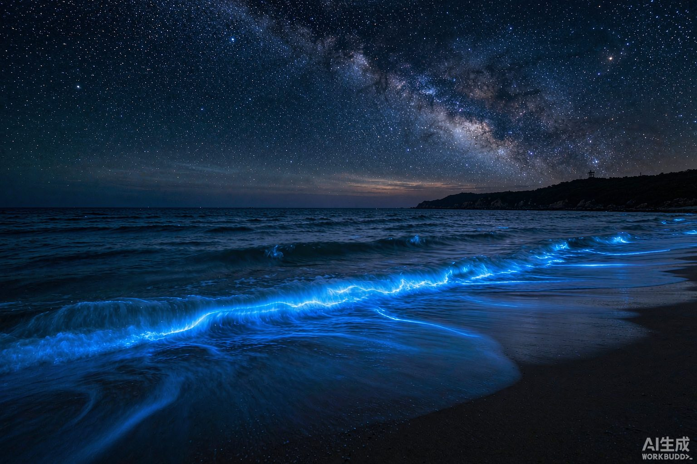
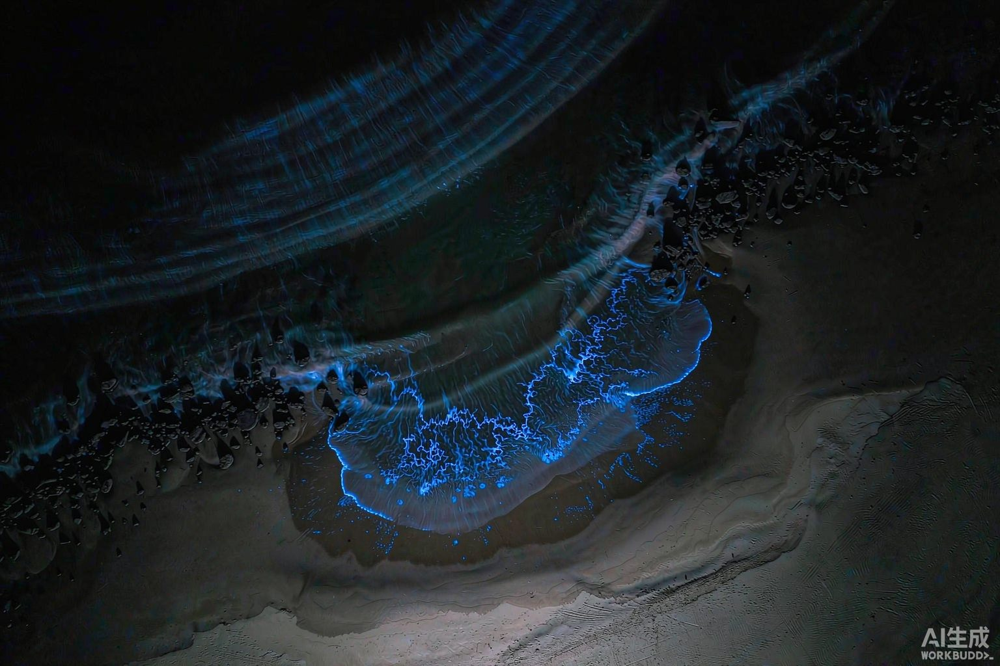
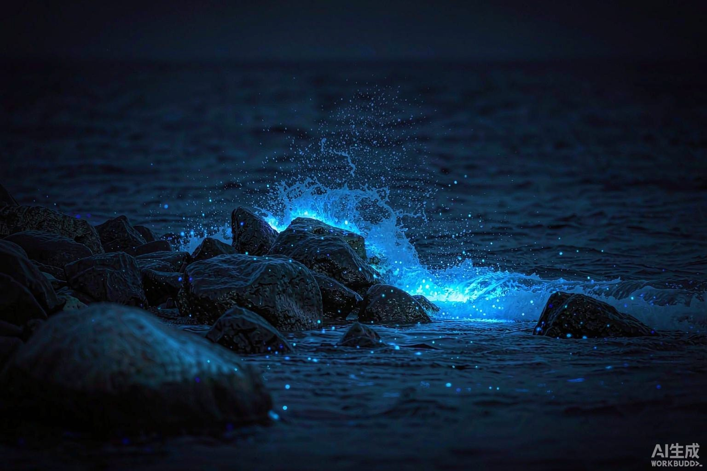
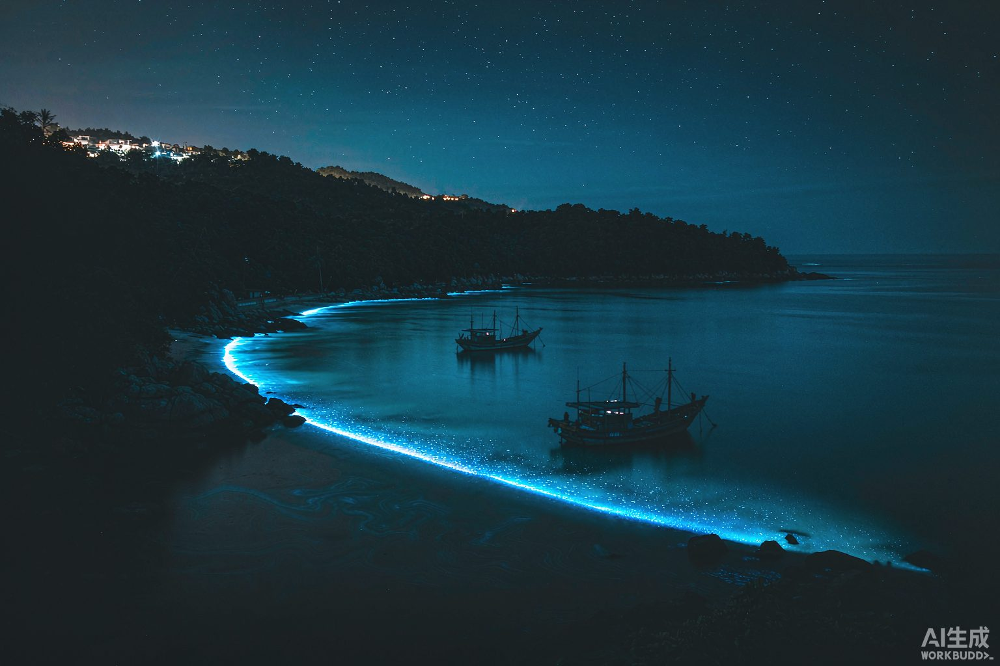
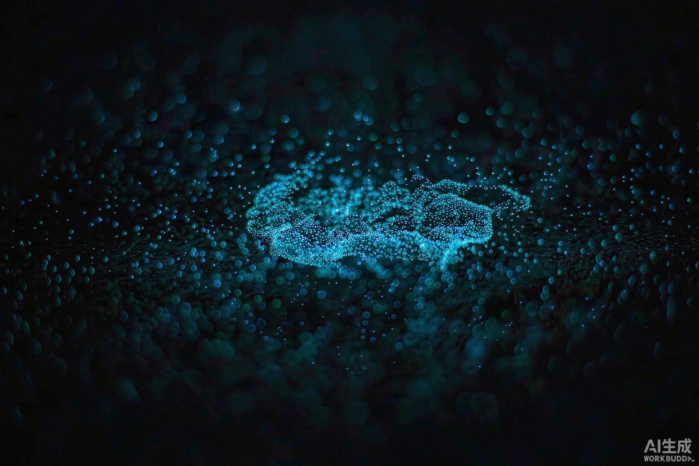
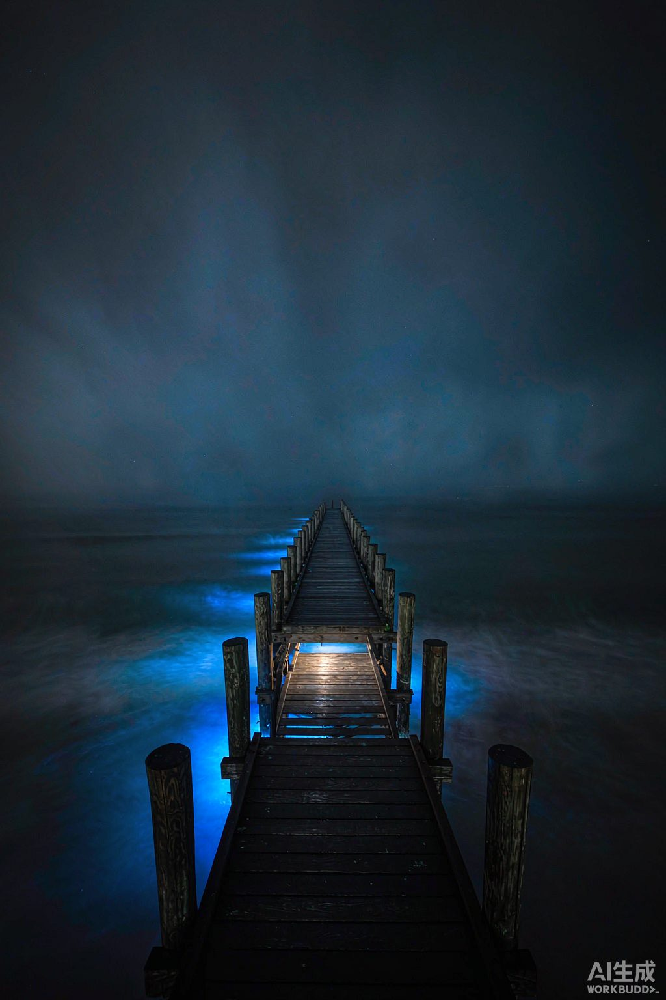

夜光藻
Noctiluca scintillans中国海岸蓝眼泪的第一主角。单细胞甲藻，直径 0.2–2 mm，白天用肉眼就能在海水里看到细小白点。它最擅长的不是「一颗一颗亮」，而是把整条浪线、整片潮头染成流动的蓝。

中国海岸 · 夜光现象观察手册
当海面在你脚下亮起，
是十万个单细胞生物同时回答了你。
发光原理 · 生成条件 · 十个追泪点位的手绘地图 · 结合风向与天气的出现概率
海水里漂着数以亿计的微小生物。其中一小部分体内带着一套极其古老的发光装置——当浪、风、船桨、甚至你的脚步把它们「撞」了一下，它们就会把化学能直接变成光。
示意：夜光藻受到水流剪切力时的瞬时闪光。真实场景中，一整条浪线是成千上万个细胞同时被触发。
发光的主角是两种分子：荧光素（luciferin）和荧光素酶（luciferase）。细胞被搅动时，膜电位瞬间变化，让荧光素在酶的催化下与氧气结合——产物回到基态时放出光子。整个过程几乎不产生热量，所以被称为冷光。
放出的光集中在 470–490 纳米，是偏青的蓝。这个「选择」并不浪漫，而是物理上的最优解：海水对红光、黄光的吸收极快，唯独蓝光衰减最少、传得最远；而人眼在暗环境下的敏感峰值在 505 纳米附近。于是深夜里，那点微光恰好落在最容易被你看见的位置。
中国海岸蓝眼泪的第一主角。单细胞甲藻，直径 0.2–2 mm，白天用肉眼就能在海水里看到细小白点。它最擅长的不是「一颗一颗亮」，而是把整条浪线、整片潮头染成流动的蓝。
严格说它不是萤火虫，也不是藻，而是一类介形纲的小甲壳动物，1–3 mm。它把荧光素和酶直接分泌进水里，形成细胞外发光，所以看上去是一颗一颗的蓝色碎星，被踩到才会亮。
蓝眼泪要同时满足两件事：海里本来就有足够多的发光生物（供给），以及它们今夜被推到岸边、聚在一起、并被扰动（呈现）。前者看季节与水团，后者看风、潮、月。
20–25 ℃ 最适
夜光藻在 15–28 ℃ 都能存活，20–25 ℃ 繁殖最快。低于 15 ℃ 活性骤降，高于 30 ℃ 受抑制。这也是为什么蓝眼泪随季节由南向北推进。
24–32 ‰
近岸广盐性，但暴雨之后淡水径流会让表层盐度骤降，通常 24–48 小时内「熄灯」。所以大雨当天和次日基本可以放弃。
氮 · 磷 富营养
夜光藻爆发需要充足的氮磷与微量元素。河口、养殖区、上升流活跃的海域更容易形成高密度藻华——这也是它和「水质变差」纠缠不清的原因。
向岸风 3–4 级
最关键的一条。吹向陆地的风（3.4–7.9 m/s）把外海的藻华压向岸边，在潮头堆出一条发光的带子。离岸风会把它们全部带回外海，完全静风则只是水面淡淡一层。
大潮 · 涨潮
农历初一、十五前后潮差最大，涨潮把藻推上岸；退潮后留在湿沙滩上的那一层，被踩一脚会亮成一片。平潮时聚集带最不明显。
新月 最佳
不是亮度变了，是对比度没了。满月的月光会把整个海面照亮，微弱荧光被淹没。农历月初、月末，或月亮在午夜前落下的日子最好。
4–6 月 闽粤最盛
随纬度推迟：广西、广东约 2–5 月，福建 4–6 月（近年 3 月已有），浙江 5–7 月，大连、秦皇岛 5–7 月。台风前后水团剧烈交换，常有意外的爆发。
半封闭海湾
C 形湾、口袋湾把漂来的藻「兜」住；缓坡沙滩便于踩出光圈，礁石区浪碎处最亮。同时要远离城市灯光——岸边一排路灯足以毁掉整晚。
水温 20–25 ℃＋向岸风 3–4 级＋大潮涨潮＋新月前后＋晴、无雨＋半封闭海湾
六条同时成立时，闽东、平潭一带的命中率可以很高；缺两条以上，就变成碰运气。蓝眼泪的出现跟着水温走：春天从华南、闽粤起，一路北上到渤海。下面这张手绘图按「由北向南」排列十个点位，点击图钉查看每个点的季节、风向与看点。
把点位、月份、水温、风向风力、潮汐、月相、天气输进去，模型会按各项条件的贡献算出一个经验命中率。它不是预报，而是把「老师傅的判断」拆成了可以调参数的算式。
模型为经验加权估算（权重见下方「模型说明」），不构成气象、海况预报或出行安全建议。现实中藻华分布极不均匀，同一片海湾的两头也可能一明一暗。
统一按「盛期 + 水温 22 ℃ + 风向随机 + 3 级风 + 平潮 + 上弦月 + 晴间多云」计算，用来横向比较点位的先天条件。
每个点位有一个自身系数 k（0.42–0.87），由藻华强度、海湾形态、灯光干扰等长期因素决定。总分由七项加权求和：
最终命中率 = 总分 × k，上限 92%。
同一片海，不同的看法：站在浪里、爬上礁石、飞起无人机、或者干脆潜进水里。点开任意一张看大图。





以上图像由 AI 生成，用于还原目击场景；真实蓝眼泪的亮度通常更暗、更细碎，需要长曝光才能拍成这样。